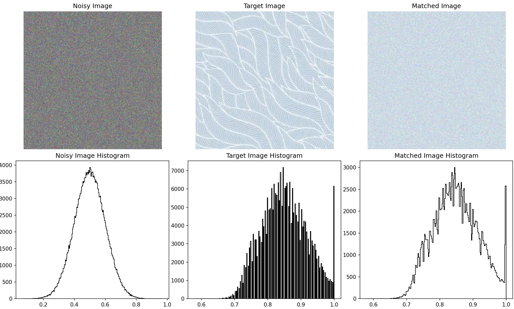

CS180 Final Project
Yuze Zhang
Project 1: Image Quilting
Randomly Sampled Texture
Objective: Generate a basic output texture using randomly sampled patches from the input texture to
understand the foundational process of texture synthesis.
This step involves generating an output image by randomly sampling square patches from a given input texture sample.
The patches are tiled sequentially starting from the upper-left corner until the output image size is reached. Any
remaining space that cannot be filled with a full patch is left with black borders. First, I will match the element
in the top-left corner of the image to the top-left corner of the output. Then, recursively in row and column order,
each patch will be filled with random patches from the original image. In this step, we do not need to consider the
overlap between patches.
Parameters: output size: 200, patch size: 15
Results

Ramdom Sampled Texture

Ramdom Sampled Texture
Overlapping Patches
Objective: Improve texture coherence by using overlapping regions between patches and selecting patches
based on similarity.
In this step, overlapping patches are used to ensure better coherence between adjacent patches. Overlapping regions
are evaluated based on their similarity using the Sum of Squared Differences (SSD). Patches are chosen randomly from
those with SSD costs below a defined threshold (tol) To enhance the generative capability of the algorithm, I select
the tol patches with the lowest cost and randomly choose one from these patches to fill in. When tol is large, the
algorithm has stronger generative ability, but mismatched patterns may occur; when tol is small, the patterns are more
uniform, but the ability to generate new content is limited.
Parameters: output size: 300, patch size: 25, overlap: 11, tolerance: 3
Results

quilt simple tol=5

quilt simple tol=3

quilt simple tol=1
Seam Finding
Objective: Eliminate visible seams in overlapping patches by computing optimal seams for blending
overlapping regions.
This step introduces seam finding to remove visible edge artifacts in overlapping patches. A minimum-cost path is
computed through the overlapping region, blending pixels from both patches based on similarity. To avoid obvious edges
in the stitching between patches, I find the path with the minimum cost and create a mask based on this path. The parts
of the patch corresponding to the mask value of 1 are then stitched into the image, achieving a better visual effect.
Results

patch

overlap

one step

output
Additional Quilting Results
Objective: Demonstrate the versatility and effectiveness of the quilting algorithm by applying it to
new input textures and producing high-quality results.
Apply the quilting algorithm (with seam finding) on different input textures to produce creative and realistic outputs.
The output images should be larger than the input texture sample to demonstrate the algorithm's scalability.
Parameters: output size: 300, input size: 200, patch size: 25, overlap: 11, tolerance: 3
Results

output

origin
Texture Transfer
Objective: Apply a texture to a target image while preserving the target’s structure and incorporating the
texture’s appearance.
Texture transfer involves applying the texture from a source sample onto a target image, preserving the target's structure
while blending in the source texture's appearance. The implementation steps are similar to the previous section. The main
difference lies in the calculation of the SSD cost image, which also includes the difference between the output image and
the target image. For simplicity, set the output image to be the same size as the target image. During each step of generating
the output image, use the new cost to calculate the seam and mask.
Parameters: output size: 300, input size: 200, patch size: 25, overlap: 11, tolerance: 3, alpha: 0.5
Results

origin

target

output
Bells & Whistles: Iterative Texture Transfer
Gradually refine texture transfer results by iteratively improving the mapping between the source texture and the target image.
Iterative texture transfer is a process where the texture is progressively transferred onto the target image over multiple iterations.
This approach ensures that the texture aligns with the underlying features of the target image across different scales, improving the
overall quality of the result. In each iteration, the algorithm processes the target image using patches from the source texture. These
patches are matched to the target image based on both texture similarity and structural alignment. As the iteration progresses, the patch
size and alpha are reduced, allowing the algorithm to perform more precise processing.
Results
texture
target
texture transfer
iterative texture transfer

iterative texture transfer
Project 2: Pyramid-Based Texture Analysis and Synthesis
Implementing Oriented Filters
Objective: Create and verify oriented filters, and demonstrate that the sum of all oriented filters
for a given band equals a standard Laplacian band-pass filter.
The oriented filters are used to extract direction-specific information from images, which is a critical component
of the steerable pyramid. These filters operate in the spatial domain to extract oriented features at various frequency
bands. The implementation involves validating the filters by summing them and showing that their combination is equivalent
to a Laplacian band-pass filter. To demonstrate their utility, a set of sample images is convolved with these filters, and
the resulting direction-specific features are visualized.
Results

oriented filter

example

output
Each oriented filter corresponds to high-frequency waves in a specific direction. Adding up the band-pass results of all
oriented filters gives the high-frequency waves across all directions, which is equivalent to filtering directly with a
Laplacian filter. Although there may be slight differences—caused by an insufficient number of directional filters—if the
number of directional filters is sufficiently large, the results should be consistent.

laplacian band pass and summed oriented band pass
Constructing the Oriented Laplacian Pyramid
Objective: Decompose an image into multiple scales and orientations using the steerable pyramid.
The pyramid construction begins by applying a high-pass filter to compute the high-frequency residual. Next, a low-pass
filter is used to compute the low-frequency band. For each scale, the low-frequency band is further decomposed into multiple
directional subbands using oriented filters. This process repeats for each scale, progressively downsampling the low-frequency
band. The final low-frequency residual is stored as the base of the pyramid.
Results

oriented laplacian pyramid
The first direction corresponds to the vertical (up and down) direction, the second direction corresponds to the bottom-left to
top-right direction, the third direction corresponds to the horizontal (left and right) direction, and the fourth direction corresponds
to the top-left to bottom-right direction. It can be observed that the filters for each direction highlight edges perpendicular to that
direction.
Histogram Matching
Objective: Match the histogram of a noisy image to the source image in both the spatial domain and the pyramid domain.
Histogram matching ensures that the intensity or color distribution of an image matches the source texture. By iteratively
matching the frequency space and pixel space of the image, the frequency and pixel distributions of the noise gradually approach
those of the texture distribution, achieving the process of texture synthesis.
Results

historgram matching output
I also performed histogram matching on each channel of the three-channel image, resulting in the following output. Although it
still appears noisy, it now reflects the corresponding colors of the target image and has a similar histogram distribution. The
images below show the original noise, the target image, and the matched noise, with histograms representing the grayscale
distributions of each.

histogram matching output
histogram matching output
Texture Synthesis
Objective: Generate textures using the match-texture algorithm.
This step uses the histogram-matched pyramid as a basis. The synthesis begins with a noisy image and progressively adjusts
its pyramid representation to match that of the source texture. The process involves reconstructing the image from the adjusted
pyramid while maintaining histogram alignment at each level.
To get better representation of the image, I use PCA for image processing and feature extraction. And final results are shown below.
Results